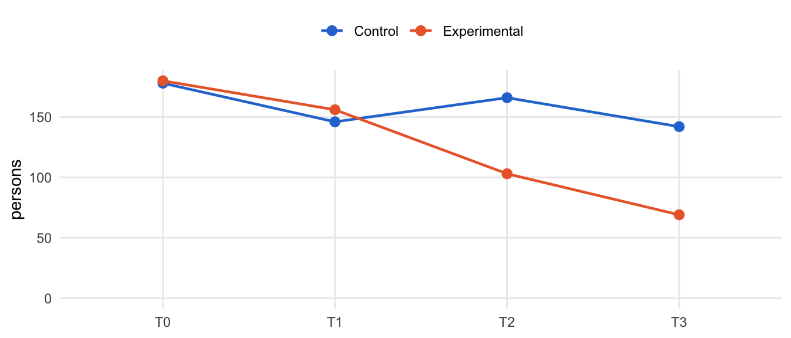
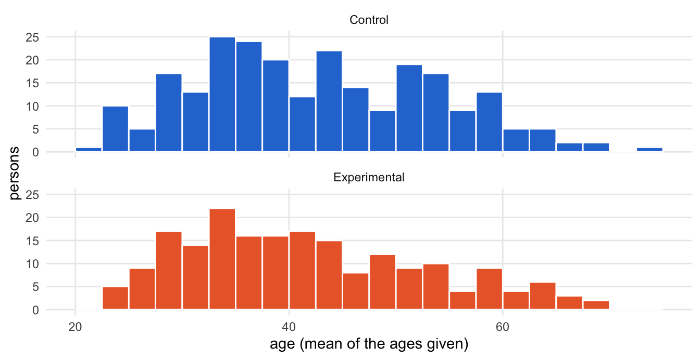

source("R/packages.R") # all packages (Chapter 1)
source("R/settings.R") # waves, conditions, folders (Chapter 1)
df <- readRDS("cache/df.rds") # one row per questionnaire (Chapter 2)
df_wide <- readRDS("cache/df_wide.rds") # one row per person (Chapter 2)3. Sample
NoteAbout this chapter
Who took part, at which waves and in which municipalities; whether the two conditions are comparable; and the sample sets on which later chapters re-estimate the training effects. Every part goes through the same six steps, from the rows it starts from to what follows from it; a table at the end puts the persons, the comparisons and the sample sets side by side. Feeds the description of the participants in the Method section.
3.1 How each part of the sample is examined
What happens to each part of the sample? The same six steps in three parts, always in the same order: the problem, the rule and the result. The diagram shows the path; the list below describes each step.
flowchart TB
subgraph PROBLEM["the problem"]
direction LR
S1["<b>Step 1</b><br>what the data look like"] --> S2{{"<b>Step 2</b><br>the problem:<br>what could<br>mislead?"}}
end
subgraph RULE["the rule"]
direction LR
S3["<b>Step 3</b><br>the rule:<br>counted, tested<br>or defined"] --> S4["<b>Step 4</b><br>the evidence<br>per case"]
end
subgraph RESULT["the result"]
direction LR
S5["<b>Step 5</b><br>before and after"] --> S6["<b>Step 6</b><br>what follows"]
end
PROBLEM --> RULE
RULE --> RESULT
classDef all fill:#efeff2,stroke:#8a8a8a,color:#1d1d1f
classDef verdict fill:#ffffff,stroke:#1d1d1f,color:#1d1d1f
class S1,S2,S3,S4,S5 all
class S6 verdict
style PROBLEM fill:#fafafa,stroke:#8a8a8a
style RULE fill:#fafafa,stroke:#8a8a8a
style RESULT fill:#fafafa,stroke:#8a8a8a
The six steps in detail:
The problem:
- What the data look like. The rows the part starts from: one row per questionnaire (
df) or one row per person (df_wide), as Chapter 2 saved them. - The problem. What the rows do not tell directly, or could mislead about: persons who answered at different waves, waves that never arrived, missing answers on age or sex, groups that differ by chance.
The rule:
- The rule. How the part is counted, tested or defined. A person counts once. The two conditions are compared with a Mann-Whitney U test for age, a χ² test with continuity correction for sex, and a χ² test for the waves attended, which is descriptive, because a person contributes up to four questionnaires; p < .05 counts as a difference. Each sample set is defined by the waves its persons attended.
- The evidence per case. The counts behind the result: per municipality, per pattern of attendance, per person.
The result:
- Before and after. What the rule changes: from questionnaires to persons, from January to December, from all questionnaires to a sample set.
- What follows. Where the part goes next: the description of the participants in the Method section, the models of the later chapters, and the re-estimation of the training effects in Chapter 14.
3.2 Data and tools
Which data? One row per questionnaire (df) for everything counted per wave, one row per person (df_wide) for everything counted per person, and, for the patterns of attendance and the sample sets, the waves each person answered:
# the waves each person answered, as a pattern such as T0-T1-T3
person_patterns <- df |>
arrange(id, Occasion) |>
summarise(pattern = str_c(Occasion, collapse = "-"),
.by = c(id, condition, Municipality))Which tools? Every count and test is written out where it is used. Only the two figures use small functions, defined once here:
# the persons answering at each wave, by condition
condition_colours <- c(Control = "#2a78d6", Experimental = "#eb6834")
plot_by_wave <- \(counts) {
counts |>
ggplot(aes(Occasion, persons, colour = condition, group = condition)) +
geom_line(linewidth = .8) +
geom_point(size = 2.6) +
scale_colour_manual(values = condition_colours) +
scale_y_continuous(limits = c(0, NA)) +
labs(x = NULL, y = "persons", colour = NULL) +
theme_minimal(base_size = 11) +
theme(panel.grid.minor = element_blank(), legend.position = "top")
}# the age of the persons, one panel per condition
plot_age <- \(persons) {
persons |>
filter(!is.na(age)) |>
ggplot(aes(age, fill = condition)) +
geom_histogram(binwidth = 2.5, boundary = 20, colour = "white") +
facet_wrap(~ condition, ncol = 1) +
scale_fill_manual(values = condition_colours, guide = "none") +
labs(x = "age (mean of the ages given)", y = "persons") +
theme_minimal(base_size = 11) +
theme(panel.grid.minor = element_blank())
}3.3 Who took part
Which parts? Four: the persons, the waves, the municipalities with their trainers, and the patterns in which the persons attended.
Persons
Its path through the steps. One row per step below; every step uses all persons:
| Step | Question | Result | Next |
|---|---|---|---|
| 2 | What do the questionnaires not tell directly? | a person answering four times weighs four times; ages and sexes differ between waves | the rule |
| 3 | How is a person described? | once, with one age and one sex | the evidence |
| 4 | How far apart are the ages one person gave? | mostly the same, or a year apart | before and after |
| 5 | What does counting persons change? | per person, both groups answered about equally often | what follows |
| 6 | Where next? | the Method section; the comparisons of 3.4 | waves |
The problem · Steps 1 and 2
Step 1 · What the data look like all persons
How many questionnaires does a person contribute? One row per questionnaire in df, one row per person in df_wide; a person answered at one to four waves:
df_wide |>
count(n_waves, name = "persons") |>
mutate(questionnaires = n_waves * persons)| n_waves | persons | questionnaires |
|---|---|---|
| 1 | 106 | 106 |
| 2 | 128 | 256 |
| 3 | 90 | 270 |
| 4 | 127 | 508 |
1,140 questionnaires come from 451 persons.
Next → Step 2, the problem: What do the questionnaires not tell directly?
Step 2 · The problem all persons
What do the questionnaires not tell directly? Counted by questionnaire, a person who answered four times weighs four times as much as one who answered once. And age and sex were asked on every questionnaire: some persons left them out, and many gave different ages at different waves:
df |>
summarise(ages = n_distinct(age, na.rm = TRUE),
sexes = n_distinct(sex, na.rm = TRUE),
.by = c(id, condition)) |>
summarise(persons = n(),
no_age = sum(ages == 0),
ages_differ = sum(ages > 1),
no_sex = sum(sexes == 0),
sexes_differ = sum(sexes > 1),
.by = condition) |>
arrange(condition)| condition | persons | no_age | ages_differ | no_sex | sexes_differ |
|---|---|---|---|---|---|
| Control | 252 | 7 | 58 | 14 | 0 |
| Experimental | 199 | 1 | 93 | 8 | 1 |
Next → Step 3, the rule: How is a person described?
The rule · Steps 3 and 4
Step 3 · The rule all persons
How is a person described? Once, in df_wide (Chapter 2): age as the mean of the ages given, sex as the answer given most often (the one person who gave both, once each, counts as a woman), and the number of waves attended. The share of women is taken among those who gave their sex. By condition:
participants <- df_wide |>
summarise(persons = n(),
age_M = mean(age, na.rm = TRUE),
age_SD = sd(age, na.rm = TRUE),
female = mean(female, na.rm = TRUE),
waves_M = mean(n_waves),
.by = condition) |>
arrange(condition) |>
mutate(across(where(is.double), \(x) round(x, 2)))
participants| condition | persons | age_M | age_SD | female | waves_M |
|---|---|---|---|---|---|
| Control | 252 | 42.86 | 11.05 | 0.88 | 2.51 |
| Experimental | 199 | 41.74 | 11.15 | 0.90 | 2.55 |
Next → Step 4, the evidence per case: How far apart are the ages one person gave?
Step 4 · The evidence per case all persons
How far apart are the ages one person gave? For each person with an age, the difference between the highest and the lowest age given:
age_spread <- df |>
filter(!is.na(age)) |>
summarise(spread = max(age) - min(age), .by = id)
age_spread |>
count(years_apart = spread, name = "persons")| years_apart | persons |
|---|---|
| 0 | 292 |
| 1 | 120 |
| 2 | 20 |
| 3 | 1 |
| 5 | 3 |
| 9 | 2 |
| 10 | 2 |
| 19 | 1 |
| 27 | 1 |
| 33 | 1 |
Most persons give the same age throughout, or one that grows by a year between the waves. For 10 persons the ages given lie five years or more apart; for them, too, the mean of the ages given stands for the person.
Next → Step 5, before and after: What does counting persons change?
The result · Steps 5 and 6
Step 5 · Before and after all persons
What does counting persons change? Questionnaires and persons by condition:
df |>
summarise(questionnaires = n(), persons = n_distinct(id),
.by = condition) |>
arrange(condition) |>
mutate(per_person = round(questionnaires / persons, 2))| condition | questionnaires | persons | per_person |
|---|---|---|---|
| Control | 632 | 252 | 2.51 |
| Experimental | 508 | 199 | 2.55 |
The control group has more questionnaires because it has more persons; per person, both groups answered about equally often.
Next → Step 6, what follows: What goes into the Method section?
Step 6 · What follows
What goes into the Method section? 451 social workers took part, 252 in the control and 199 in the experimental condition. Both groups are in their early forties, about nine in ten are women, and both attended 2.5 of the four waves on average. Whether the two conditions differ in age, sex and attendance is tested in 3.4.
Waves
Its path through the steps. One row per step below; every step uses all persons:
| Step | Question | Result | Next |
|---|---|---|---|
| 2 | Why look at the waves one by one? | persons left and joined during the year | the rule |
| 3 | How is each wave described? | by the persons who answered at that wave | the evidence |
| 4 | Who joins and who leaves at each wave? | the control group gains persons in September; the experimental group loses more than half | before and after |
| 5 | How does the composition change? | age and sex stable, group sizes not | what follows |
| 6 | Where next? | attendance patterns and sample sets | municipalities |
The problem · Steps 1 and 2
Step 1 · What the data look like all persons
How many questionnaires arrived at each wave? One per person and wave:
df |>
count(condition, Occasion) |>
pivot_wider(names_from = Occasion, values_from = n)| condition | T0 | T1 | T2 | T3 |
|---|---|---|---|---|
| Control | 178 | 146 | 166 | 142 |
| Experimental | 180 | 156 | 103 | 69 |
Next → Step 2, the problem: Why look at the waves one by one?
Step 2 · The problem all persons
Why look at the waves one by one? Persons left the study during the year and others joined it. If those who stayed differ from those who left, the groups in December are no longer the groups of January, and a change between two waves can come from who answered rather than from the training.
Next → Step 3, the rule: How is each wave described?
The rule · Steps 3 and 4
Step 3 · The rule all persons
How is each wave described? By the persons who answered at that wave: their number, age and share of women, per condition:
by_wave <- df |>
summarise(persons = n_distinct(id),
age_M = mean(age, na.rm = TRUE),
age_SD = sd(age, na.rm = TRUE),
female = mean(sex == "Female", na.rm = TRUE),
.by = c(condition, Occasion)) |>
arrange(condition, Occasion) |>
mutate(across(where(is.double), \(x) round(x, 2)))
by_wave| condition | Occasion | persons | age_M | age_SD | female |
|---|---|---|---|---|---|
| Control | T0 | 178 | 42.69 | 10.79 | 0.91 |
| Control | T1 | 146 | 42.74 | 10.73 | 0.92 |
| Control | T2 | 166 | 43.21 | 11.34 | 0.88 |
| Control | T3 | 142 | 43.29 | 10.68 | 0.91 |
| Experimental | T0 | 180 | 40.80 | 10.97 | 0.90 |
| Experimental | T1 | 156 | 40.87 | 10.65 | 0.93 |
| Experimental | T2 | 103 | 40.77 | 10.36 | 0.93 |
| Experimental | T3 | 69 | 39.39 | 8.95 | 0.91 |
Next → Step 4, the evidence per case: Who joins and who leaves at each wave?
Step 4 · The evidence per case all persons
Who joins and who leaves at each wave? Per wave, the persons who answer for the first time and those who answer for the last time:
waves_flow <- df |>
mutate(wave = as.integer(Occasion)) |>
mutate(first = wave == min(wave), last = wave == max(wave), .by = id) |>
summarise(persons = n(),
first_time = sum(first),
last_time = sum(last),
.by = c(condition, Occasion)) |>
arrange(condition, Occasion)
waves_flow| condition | Occasion | persons | first_time | last_time |
|---|---|---|---|---|
| Control | T0 | 178 | 178 | 25 |
| Control | T1 | 146 | 12 | 44 |
| Control | T2 | 166 | 54 | 41 |
| Control | T3 | 142 | 8 | 142 |
| Experimental | T0 | 180 | 180 | 30 |
| Experimental | T1 | 156 | 8 | 48 |
| Experimental | T2 | 103 | 9 | 52 |
| Experimental | T3 | 69 | 2 | 69 |
The control group gains 54 new persons in September. The experimental group loses 100 persons after March or September, more than half of its January group.
Next → Step 5, before and after: How does the composition change from January to December?
The result · Steps 5 and 6
Step 5 · Before and after all persons
How does the composition change from January to December?
by_wave |>
plot_by_wave()
Age and sex stay stable within each condition; the group sizes do not. The experimental group shrinks from 180 persons in January to 69 in December, while the control group keeps between 142 and 178.
Next → Step 6, what follows: Where does this go?
Step 6 · What follows
Where does this go? The later training windows rest on fewer persons, above all in the experimental group. The patterns of attendance (below) and the sample sets (3.5) show who is behind the counts; Chapter 9 asks whether dropout explains the effects.
Municipalities and trainers
Its path through the steps. One row per step below; every step uses all persons:
| Step | Question | Result | Next |
|---|---|---|---|
| 2 | Did everyone who answered complete the training? | not necessarily | the rule |
| 3 | How are the two counts set side by side? | persons who answered against persons the trainers certified | the evidence |
| 4 | Which waves arrived from where? | three waves never arrived; some municipalities thin out | before and after |
| 5 | How many more answered than completed the training? | more in every municipality | what follows |
| 6 | Where next? | the levels of the multilevel models | patterns |
The problem · Steps 1 and 2
Step 1 · What the data look like all persons
How are the municipalities paired? The study randomized municipalities, not persons: each of ten trainers trained one municipality of each condition.
df |>
distinct(trainedBy, condition, Municipality) |>
pivot_wider(names_from = condition, values_from = Municipality) |>
arrange(trainedBy)| trainedBy | Control | Experimental |
|---|---|---|
| 1 | Vršac | Kula |
| 2 | Bač | Valjevo |
| 3 | Prijepolje | Sokobanja |
| 4 | Arilje | Leskovac |
| 5 | Pirot | Kruševac |
| 6 | Požarevac | Šid |
| 7 | Šabac | Raška |
| 8 | Lebane | NoviPazar |
| 9 | Kikinda | Užice |
| 10 | Vlasotince | Kanjiža |
Next → Step 2, the problem: Did everyone who answered complete the training?
Step 2 · The problem all persons
Did everyone who answered complete the training? Not necessarily. The trainers reported how many participants completed the training, and questionnaires were also collected from social workers who had not (yet) finished it. Registrations and dropout before the first questionnaire were not recorded.
Next → Step 3, the rule: How are the two counts set side by side?
The rule · Steps 3 and 4
Step 3 · The rule all persons
How are the two counts set side by side? certified is the number of participants the trainers reported as having completed the training; surveyed counts the persons who answered at least one questionnaire.
# completed trainings, as reported by the trainers
certified <- tribble(
~Municipality, ~certified,
"Kanjiža", 18, "Kruševac", 17, "Kula", 13, "Leskovac", 16,
"NoviPazar", 18, "Raška", 17, "Šid", 10, "Sokobanja", 20,
"Užice", 17, "Valjevo", 12, "Arilje", 7, "Bač", 7,
"Kikinda", 9, "Lebane", 8, "Pirot", 15, "Požarevac", 11,
"Prijepolje", 21, "Vršac", 7, "Šabac", 34, "Vlasotince", 16
)
municipalities <- df |>
distinct(id, condition, trainedBy, Municipality) |>
count(condition, trainedBy, Municipality, name = "surveyed") |>
left_join(certified, by = "Municipality") |>
pivot_wider(names_from = condition,
values_from = c(Municipality, surveyed, certified),
names_glue = "{condition}_{.value}") |>
select(trainedBy, starts_with("Experimental"), starts_with("Control"))
municipalities| trainedBy | Experimental_Municipality | Experimental_surveyed | Experimental_certified | Control_Municipality | Control_surveyed | Control_certified |
|---|---|---|---|---|---|---|
| 1 | Kula | 15 | 13 | Vršac | 24 | 7 |
| 2 | Valjevo | 16 | 12 | Bač | 12 | 7 |
| 3 | Sokobanja | 23 | 20 | Prijepolje | 28 | 21 |
| 4 | Leskovac | 21 | 16 | Arilje | 25 | 7 |
| 5 | Kruševac | 18 | 17 | Pirot | 23 | 15 |
| 6 | Šid | 14 | 10 | Požarevac | 23 | 11 |
| 7 | Raška | 23 | 17 | Šabac | 45 | 34 |
| 8 | NoviPazar | 26 | 18 | Lebane | 22 | 8 |
| 9 | Užice | 23 | 17 | Kikinda | 20 | 9 |
| 10 | Kanjiža | 20 | 18 | Vlasotince | 30 | 16 |
Next → Step 4, the evidence per case: Which waves arrived from where?
Step 4 · The evidence per case all persons
Which waves arrived from where? Questionnaires by municipality and wave; a zero marks a wave that never arrived from there.
coverage <- df |>
count(condition, Municipality, Occasion) |>
pivot_wider(names_from = Occasion, values_from = n, values_fill = 0)
coverage| condition | Municipality | T0 | T1 | T2 | T3 |
|---|---|---|---|---|---|
| Control | Arilje | 21 | 19 | 12 | 7 |
| Control | Bač | 7 | 4 | 7 | 6 |
| Control | Kikinda | 17 | 17 | 17 | 17 |
| Control | Lebane | 14 | 0 | 12 | 9 |
| Control | Pirot | 19 | 19 | 17 | 15 |
| Control | Požarevac | 17 | 15 | 12 | 11 |
| Control | Prijepolje | 21 | 21 | 21 | 20 |
| Control | Vlasotince | 19 | 19 | 19 | 16 |
| Control | Vršac | 22 | 12 | 10 | 7 |
| Control | Šabac | 21 | 20 | 39 | 34 |
| Experimental | Kanjiža | 20 | 16 | 11 | 11 |
| Experimental | Kruševac | 18 | 17 | 13 | 5 |
| Experimental | Kula | 15 | 13 | 3 | 3 |
| Experimental | Leskovac | 19 | 16 | 16 | 15 |
| Experimental | NoviPazar | 23 | 17 | 12 | 5 |
| Experimental | Raška | 19 | 17 | 19 | 16 |
| Experimental | Sokobanja | 18 | 19 | 12 | 0 |
| Experimental | Užice | 20 | 17 | 5 | 12 |
| Experimental | Valjevo | 15 | 13 | 4 | 0 |
| Experimental | Šid | 13 | 11 | 8 | 2 |
Lebane sent no March wave, for reasons that are not documented, and Sokobanja and Valjevo sent no December wave; Kula has hardly any questionnaires after March, Šid hardly any in December. December questionnaires were reported lost in the post. Šabac took in a new group in September, while Užice has few questionnaires in that wave. Missing waves thus mix three sources: waves that never arrived, new intakes, and individual dropout.
How many waves did the persons of each municipality attend?
waves_by_municipality <- df_wide |>
count(condition, Municipality, n_waves) |>
pivot_wider(names_from = n_waves, values_from = n, values_fill = 0,
names_prefix = "waves_", names_sort = TRUE) |>
arrange(condition, desc(waves_4))
waves_by_municipality| condition | Municipality | waves_1 | waves_2 | waves_3 | waves_4 |
|---|---|---|---|---|---|
| Control | Kikinda | 2 | 2 | 2 | 14 |
| Control | Prijepolje | 2 | 11 | 1 | 14 |
| Control | Pirot | 3 | 5 | 3 | 12 |
| Control | Šabac | 4 | 25 | 4 | 12 |
| Control | Vlasotince | 6 | 13 | 3 | 8 |
| Control | Požarevac | 7 | 7 | 2 | 7 |
| Control | Arilje | 7 | 7 | 6 | 5 |
| Control | Vršac | 8 | 9 | 3 | 4 |
| Control | Bač | 6 | 2 | 2 | 2 |
| Control | Lebane | 15 | 1 | 6 | 0 |
| Experimental | Raška | 6 | 1 | 1 | 15 |
| Experimental | Leskovac | 5 | 0 | 3 | 13 |
| Experimental | Kanjiža | 3 | 6 | 1 | 10 |
| Experimental | Užice | 8 | 4 | 6 | 5 |
| Experimental | Kula | 2 | 10 | 0 | 3 |
| Experimental | Šid | 4 | 2 | 6 | 2 |
| Experimental | Kruševac | 1 | 0 | 16 | 1 |
| Experimental | NoviPazar | 8 | 5 | 13 | 0 |
| Experimental | Sokobanja | 6 | 8 | 9 | 0 |
| Experimental | Valjevo | 3 | 10 | 3 | 0 |
Persons with all four waves come more often from the control municipalities (78 against 49). In Lebane, Sokobanja and Valjevo nobody can have all four, because one of their waves never arrived.
Next → Step 5, before and after: How many more answered than completed the training?
The result · Steps 5 and 6
Step 5 · Before and after all persons
How many more answered than completed the training? The two counts, by condition:
municipalities |>
summarise(across(ends_with(c("surveyed", "certified")), sum))| Experimental_surveyed | Control_surveyed | Experimental_certified | Control_certified |
|---|---|---|---|
| 199 | 252 | 158 | 135 |
451 persons answered, 293 completed the training by the trainers’ reports. More persons answered than completed the training in every municipality: questionnaires were also collected from social workers who had not (yet) finished it. Registrations and dropout before the first questionnaire were not recorded, so how many registered persons never answered cannot be told.
Next → Step 6, what follows: Where does this go?
Step 6 · What follows
Where does this go? The municipality, not the person, is the unit that was randomized: the multilevel models of Chapter 10 nest the questionnaires in persons and the persons in municipalities, and test the trainers as a further level. The waves missing from single municipalities return in the patterns of attendance.
Attendance patterns
Its path through the steps. One row per step below; every step uses all persons:
| Step | Question | Result | Next |
|---|---|---|---|
| 2 | Why do the patterns have gaps? | a missing wave, a late start or a stop look alike | the rule |
| 3 | How is a pattern read? | the waves a person answered, in order | the evidence |
| 4 | Who answered only in September and December? | control participants who joined before their training | before and after |
| 5 | How do the patterns differ between the conditions? | the experimental group thins out after March | what follows |
| 6 | Where next? | the sample sets of 3.5 | 3.4 |
The problem · Steps 1 and 2
Step 1 · What the data look like all persons
When did each person answer? The waves attended, as a pattern (e.g. T0-T1-T3), by condition:
patterns <- person_patterns |>
count(condition, pattern) |>
pivot_wider(names_from = condition, values_from = n, values_fill = 0) |>
arrange(desc(Control + Experimental))
patterns| pattern | Control | Experimental |
|---|---|---|
| T0-T1-T2-T3 | 78 | 49 |
| T0-T1 | 38 | 43 |
| T0 | 25 | 30 |
| T0-T1-T2 | 14 | 40 |
| T2-T3 | 33 | 0 |
| T2 | 21 | 9 |
| T0-T1-T3 | 4 | 16 |
| T0-T2-T3 | 11 | 1 |
| T1 | 6 | 5 |
| T3 | 8 | 2 |
| T0-T2 | 4 | 1 |
| T0-T3 | 4 | 0 |
| T1-T2 | 2 | 2 |
| T1-T2-T3 | 3 | 1 |
| T1-T3 | 1 | 0 |
Next → Step 2, the problem: Why do the patterns have gaps?
Step 2 · The problem all persons
Why do the patterns have gaps? A gap can mean three things: a wave that never arrived from the person’s municipality, a person who joined during the year, or a person who skipped a wave or stopped answering. The patterns do not tell which; the coverage of the municipalities (above) and the timing of the trainings do.
Next → Step 3, the rule: How is a pattern read?
The rule · Steps 3 and 4
Step 3 · The rule all persons
How is a pattern read? A pattern lists the waves a person answered, in order: T0-T1-T2-T3 is a person with all four waves, T2-T3 one who answered only in September and December. The patterns, not the single questionnaires, decide which sample sets a person belongs to (3.5).
The 451 persons show 15 different patterns.
Next → Step 4, the evidence per case: Who answered only in September and December?
Step 4 · The evidence per case all persons
Who answered only in September and December?
late_joiners <- person_patterns |>
filter(pattern == "T2-T3") |>
count(condition, Municipality, sort = TRUE)
late_joiners| condition | Municipality | n |
|---|---|---|
| Control | Šabac | 19 |
| Control | Prijepolje | 5 |
| Control | Vlasotince | 5 |
| Control | Pirot | 2 |
| Control | Bač | 1 |
| Control | Lebane | 1 |
33 control participants answered only in September and December: they joined shortly before their own training, 19 of them with the new group in Šabac. No experimental participant shows this pattern.
Next → Step 5, before and after: How do the patterns differ between the conditions?
The result · Steps 5 and 6
Step 5 · Before and after all persons
How do the patterns differ between the conditions? Each pattern as a share of the persons of its condition:
patterns |>
mutate(across(c(Control, Experimental), \(n) round(100 * n / sum(n), 1)))| pattern | Control | Experimental |
|---|---|---|
| T0-T1-T2-T3 | 31.0 | 24.6 |
| T0-T1 | 15.1 | 21.6 |
| T0 | 9.9 | 15.1 |
| T0-T1-T2 | 5.6 | 20.1 |
| T2-T3 | 13.1 | 0.0 |
| T2 | 8.3 | 4.5 |
| T0-T1-T3 | 1.6 | 8.0 |
| T0-T2-T3 | 4.4 | 0.5 |
| T1 | 2.4 | 2.5 |
| T3 | 3.2 | 1.0 |
| T0-T2 | 1.6 | 0.5 |
| T0-T3 | 1.6 | 0.0 |
| T1-T2 | 0.8 | 1.0 |
| T1-T2-T3 | 1.2 | 0.5 |
| T1-T3 | 0.4 | 0.0 |
127 persons answered at all four waves. The experimental group thins out after March, also because two of its municipalities collected no December wave: its persons stop after March or September more often (T0-T1, T0-T1-T2), while the control group has more complete patterns and its late joiners.
Next → Step 6, what follows: Where does this go?
Step 6 · What follows
Where does this go? The patterns define the sample sets S1 to S6 (3.5).
3.4 Are the two conditions comparable?
Which comparisons? The study randomized municipalities, not persons. Three comparisons ask whether the two conditions nonetheless hold similar persons: in age, in sex, and in the waves they attended.
Age
Its path through the steps. One row per step below; every step uses both groups:
| Step | Question | Result | Next |
|---|---|---|---|
| 2 | Why could the groups differ? | chance across twenty municipalities; ages not always given | the rule |
| 3 | How is the difference tested? Does the test apply? | a rank test, one row per person; it applies | the evidence |
| 4 | Does a municipality stand out? | municipalities differ more than the conditions | before and after |
| 5 | Does the balance hold over the waves? | nearly; the experimental group answering in December is younger | what follows |
| 6 | Where next? | a covariate of the latent models | Chapter 11 |
The problem · Steps 1 and 2
Step 1 · What the data look like both groups
How old are the participants? One row per person, by condition:
df_wide |>
group_by(condition) |>
describe(age)
Descriptive Statistics
----------------------
Group: condition = Control
--------------------------
------------------------------------------------------------------------
Variable Mean Median SD Range IQR Skewness N Missing
------------------------------------------------------------------------
age 42.863 41.250 11.046 52.000 18.000 0.316 245 7
------------------------------------------------------------------------
Group: condition = Experimental
-------------------------------
------------------------------------------------------------------------
Variable Mean Median SD Range IQR Skewness N Missing
------------------------------------------------------------------------
age 41.742 40.125 11.154 46.250 15.813 0.552 198 1
------------------------------------------------------------------------df_wide |>
plot_age()
Next → Step 2, the problem: Why could the groups differ?
Step 2 · The problem both groups
Why could the groups differ? With twenty municipalities, chance alone can put older or younger social workers into one condition. And not everyone gave an age:
df_wide |>
summarise(persons = n(), without_age = sum(is.na(age)), .by = condition) |>
arrange(condition)| condition | persons | without_age |
|---|---|---|
| Control | 252 | 7 |
| Experimental | 199 | 1 |
Next → Step 3, the rule: How is the difference tested?
The rule · Steps 3 and 4
Step 3 · The rule both groups
How is the difference tested? One row per person, with a rank test (Mann-Whitney U), which compares the two distributions of age without assuming that they are normal:
age_test <- mann_whitney(df_wide, age, group = condition)
age_testMann-Whitney U Test: age by condition
U = 22601, Z = -1.235, p = 0.217, r = 0.059 (negligible), N = 443
Use summary() for detailed output.Age is balanced (p = .217).
Does the test apply? A rank test needs independent observations: one row per person, each person once, in two groups of persons who gave their age:
df_wide |>
filter(!is.na(age)) |>
summarise(persons = n(), rows_per_person = n() / n_distinct(id),
.by = condition)| condition | persons | rows_per_person |
|---|---|---|
| Control | 245 | 1 |
| Experimental | 198 | 1 |
Each person enters once, and each group holds more than a hundred persons, enough for the normal approximation with which the test is computed.
Next → Step 4, the evidence per case: Does a municipality stand out?
Step 4 · The evidence per case both groups
Does a municipality stand out? The mean age per municipality:
age_by_municipality <- df_wide |>
summarise(persons = n(), age_M = round(mean(age, na.rm = TRUE), 1),
.by = c(condition, Municipality)) |>
arrange(condition, age_M)
age_by_municipality| condition | Municipality | persons | age_M |
|---|---|---|---|
| Control | Vlasotince | 30 | 37.1 |
| Control | Pirot | 23 | 39.6 |
| Control | Arilje | 25 | 41.1 |
| Control | Bač | 12 | 41.3 |
| Control | Šabac | 45 | 43.4 |
| Control | Vršac | 24 | 43.6 |
| Control | Lebane | 22 | 43.8 |
| Control | Kikinda | 20 | 45.5 |
| Control | Prijepolje | 28 | 45.6 |
| Control | Požarevac | 23 | 47.7 |
| Experimental | Kruševac | 18 | 37.8 |
| Experimental | Valjevo | 16 | 37.9 |
| Experimental | Kula | 15 | 38.9 |
| Experimental | Užice | 23 | 38.9 |
| Experimental | Leskovac | 21 | 39.3 |
| Experimental | Raška | 23 | 41.4 |
| Experimental | Šid | 14 | 42.8 |
| Experimental | Kanjiža | 20 | 43.9 |
| Experimental | Sokobanja | 23 | 46.5 |
| Experimental | NoviPazar | 26 | 47.0 |
The municipalities differ more among themselves than the two conditions do: within each condition, their mean ages range over about ten years (from 37.1 to 47.7).
Next → Step 5, before and after: Does the balance hold over the waves?
The result · Steps 5 and 6
Step 5 · Before and after both groups
Does the balance hold over the waves? The mean age of those who answered at each wave (from the description of the waves):
by_wave |>
select(condition, Occasion, persons, age_M) |>
pivot_wider(names_from = condition, values_from = c(persons, age_M))| Occasion | persons_Control | persons_Experimental | age_M_Control | age_M_Experimental |
|---|---|---|---|---|
| T0 | 178 | 180 | 42.69 | 40.80 |
| T1 | 146 | 156 | 42.74 | 40.87 |
| T2 | 166 | 103 | 43.21 | 40.77 |
| T3 | 142 | 69 | 43.29 | 39.39 |
The gap widens a little over the year: the experimental participants who still answered in December are younger (39.4) than those of January (40.8), while the control group stays at about 43.
Next → Step 6, what follows: Where does age go?
Step 6 · What follows
Where does age go? Age, centred at its mean (age_c), is one of the two covariates of the latent models of Chapter 11.
Sex
Its path through the steps. One row per step below; every step uses both groups:
| Step | Question | Result | Next |
|---|---|---|---|
| 2 | What makes the comparison delicate? | few men; not everyone gave their sex | the rule |
| 3 | How is the difference tested? Does the test apply? | a χ² test with continuity correction; every expected count large enough | the evidence |
| 4 | How are women and men spread over the municipalities? | some municipalities without men | before and after |
| 5 | Does the balance hold over the waves? | yes, at every wave and in both conditions | what follows |
| 6 | Where next? | the second covariate of the latent models | Chapter 11 |
The problem · Steps 1 and 2
Step 1 · What the data look like both groups
How many women and men? One row per person, by condition:
df_wide |>
mutate(sex = replace_na(sex, "no answer")) |>
count(condition, sex) |>
pivot_wider(names_from = sex, values_from = n)| condition | Female | Male | no answer |
|---|---|---|---|
| Control | 209 | 29 | 14 |
| Experimental | 172 | 19 | 8 |
Next → Step 2, the problem: What makes the comparison delicate?
Step 2 · The problem both groups
What makes the comparison delicate? About one participant in ten is a man, so a few men more or less in one municipality move the shares, and not everyone gave their sex.
22 persons gave no sex at any wave.
Next → Step 3, the rule: How is the difference tested?
The rule · Steps 3 and 4
Step 3 · The rule both groups
How is the difference tested? A χ² test of sex by condition, one row per person, with the continuity correction for a 2 × 2 table:
sex_test <- chi_square(df_wide, sex, condition, correct = TRUE)
sex_testChi-Squared Test: sex x condition
chi2(1) = 0.332 (continuity-corrected), p = 0.564, V = 0.035 (negligible), N = 429
Use summary() for detailed output.Sex is balanced (p = .564).
Does the test apply? A χ² test needs an expected count of at least 5 in every cell (Cochran, 1954). The counts the test expects if sex did not depend on the condition, one row per person who gave their sex:
sex_expected <- df_wide |>
filter(!is.na(sex)) |>
with(table(condition, sex)) |>
chisq.test(correct = TRUE) |>
pluck("expected")
sex_expected |>
as.data.frame.matrix() |>
rownames_to_column("condition") |>
mutate(across(-condition, \(x) round(x, 1)))| condition | Female | Male |
|---|---|---|
| Control | 211.4 | 26.6 |
| Experimental | 169.6 | 21.4 |
The smallest expected count is 21.4, men in the experimental condition: every cell holds enough persons for the test.
Next → Step 4, the evidence per case: How are women and men spread over the municipalities?
Step 4 · The evidence per case both groups
How are women and men spread over the municipalities?
sex_by_municipality <- df_wide |>
summarise(women = sum(sex == "Female", na.rm = TRUE),
men = sum(sex == "Male", na.rm = TRUE),
no_answer = sum(is.na(sex)),
.by = c(condition, Municipality)) |>
arrange(condition, Municipality)
sex_by_municipality| condition | Municipality | women | men | no_answer |
|---|---|---|---|---|
| Control | Arilje | 18 | 6 | 1 |
| Control | Bač | 10 | 0 | 2 |
| Control | Kikinda | 20 | 0 | 0 |
| Control | Lebane | 13 | 5 | 4 |
| Control | Pirot | 23 | 0 | 0 |
| Control | Požarevac | 21 | 1 | 1 |
| Control | Prijepolje | 25 | 0 | 3 |
| Control | Vlasotince | 23 | 4 | 3 |
| Control | Vršac | 21 | 3 | 0 |
| Control | Šabac | 35 | 10 | 0 |
| Experimental | Kanjiža | 17 | 3 | 0 |
| Experimental | Kruševac | 17 | 1 | 0 |
| Experimental | Kula | 14 | 1 | 0 |
| Experimental | Leskovac | 19 | 2 | 0 |
| Experimental | NoviPazar | 20 | 2 | 4 |
| Experimental | Raška | 22 | 1 | 0 |
| Experimental | Sokobanja | 19 | 3 | 1 |
| Experimental | Užice | 18 | 4 | 1 |
| Experimental | Valjevo | 13 | 2 | 1 |
| Experimental | Šid | 13 | 0 | 1 |
In 5 municipalities none of the participants is a man.
Next → Step 5, before and after: Does the balance hold over the waves?
The result · Steps 5 and 6
Step 5 · Before and after both groups
Does the balance hold over the waves? The share of women among those who answered at each wave:
by_wave |>
select(condition, Occasion, female) |>
pivot_wider(names_from = condition, values_from = female)| Occasion | Control | Experimental |
|---|---|---|
| T0 | 0.91 | 0.90 |
| T1 | 0.92 | 0.93 |
| T2 | 0.88 | 0.93 |
| T3 | 0.91 | 0.91 |
At every wave and in both conditions, between .88 and .93 of those who answered are women.
Next → Step 6, what follows: Where does sex go?
Step 6 · What follows
Where does sex go? Sex (female) is the second covariate of the latent models of Chapter 11, which leave out the persons without age or sex:
df_wide |>
summarise(without_age_or_sex = sum(is.na(age_c) | is.na(female)),
.by = condition) |>
arrange(condition)| condition | without_age_or_sex |
|---|---|
| Control | 15 |
| Experimental | 8 |
23 persons do not enter the latent comparisons.
Waves attended
Its path through the steps. One row per step below; every step uses both groups:
| Step | Question | Result | Next |
|---|---|---|---|
| 2 | Why can attendance not be tested like age or sex? | a person gives up to four questionnaires: not independent | the rule |
| 3 | How is the difference described? | a χ² test, descriptive; the conditions differ | the evidence |
| 4 | Where does the difference lie? | experimental questionnaires earlier, control later | before and after |
| 5 | Do the persons attend equally often? | yes; what differs is which waves | what follows |
| 6 | Where next? | the sample sets of 3.5 | 3.5 |
The problem · Steps 1 and 2
Step 1 · What the data look like both groups
How many waves did the persons of each condition attend?
df_wide |>
count(condition, n_waves) |>
pivot_wider(names_from = n_waves, values_from = n, names_prefix = "waves_")| condition | waves_1 | waves_2 | waves_3 | waves_4 |
|---|---|---|---|---|
| Control | 60 | 82 | 32 | 78 |
| Experimental | 46 | 46 | 58 | 49 |
Next → Step 2, the problem: Why can attendance not be tested like age or sex?
Step 2 · The problem both groups
Why can attendance not be tested like age or sex? A person contributes up to four questionnaires, so the questionnaires are not independent of each other, and a test on them overstates the evidence. The test below is therefore descriptive: it shows where the conditions differ, not how certain the difference is.
Next → Step 3, the rule: How is the difference described?
The rule · Steps 3 and 4
Step 3 · The rule both groups
How is the difference described? A χ² test of the questionnaires per wave by condition:
attendance_test <- chi_square(df, Occasion, condition)
attendance_testChi-Squared Test: Occasion x condition
chi2(3) = 27.187, p < 0.001 ***, V = 0.154 (small), N = 1140
Use summary() for detailed output.Age (p = .217) and sex (p = .564) are balanced, attendance is not: the timing of the waves attended differs between the conditions (χ²(3) = 27.2, p < .001).
Does the test apply? The same rule for the expected counts, here of the questionnaires per wave and condition:
attendance_expected <- df |>
with(table(condition, Occasion)) |>
chisq.test() |>
pluck("expected")
attendance_expected |>
as.data.frame.matrix() |>
rownames_to_column("condition") |>
mutate(across(-condition, \(x) round(x, 1)))| condition | T0 | T1 | T2 | T3 |
|---|---|---|---|---|
| Control | 198.5 | 167.4 | 149.1 | 117 |
| Experimental | 159.5 | 134.6 | 119.9 | 94 |
Every cell expects 94 questionnaires or more. The rule on the counts holds; what the test cannot meet is the independence of the questionnaires (Step 2), which is why it describes.
Next → Step 4, the evidence per case: Where does the difference lie?
Step 4 · The evidence per case both groups
Where does the difference lie? The questionnaires of each condition by wave, as a share of all its questionnaires:
df |>
count(condition, Occasion) |>
mutate(percent = round(100 * n / sum(n), 1), .by = condition) |>
select(-n) |>
pivot_wider(names_from = Occasion, values_from = percent)| condition | T0 | T1 | T2 | T3 |
|---|---|---|---|---|
| Control | 28.2 | 23.1 | 26.3 | 22.5 |
| Experimental | 35.4 | 30.7 | 20.3 | 13.6 |
The experimental questionnaires fall more often in January and March, those of the control group more often in September and December.
Next → Step 5, before and after: Do the persons of the two conditions attend equally often?
The result · Steps 5 and 6
Step 5 · Before and after both groups
Do the persons of the two conditions attend equally often?
participants |>
select(condition, persons, waves_M)| condition | persons | waves_M |
|---|---|---|
| Control | 252 | 2.51 |
| Experimental | 199 | 2.55 |
Per person, the number of waves hardly differs (2.51 against 2.55); what differs is which waves.
Next → Step 6, what follows: Where does this go?
Step 6 · What follows
Where does this go? Because the conditions differ in when their persons answered, the training effects are re-estimated on sample sets that hold the waves attended fixed in different ways (3.5).
3.5 Sample sets
Why sample sets? Because persons entered and left the study at different waves, the training effects are re-estimated on nested sample sets (Chapter 14). Chapter 1 marks each questionnaire with the sets its person belongs to. S7, the set without the paper forms entered twice, equals S0, because Chapter 1 already removes them from the analysis file. Chapter 4 adds two sets from the screening for careless answering (S8, S9). The eight sets of this chapter:
sample_sets <- tribble(
~set, ~flag, ~definition,
"S0", NA, "all questionnaires",
"S1", "s1_complete", "persons with all four waves",
"S2", "s2_no_singletons", "persons with at least two waves",
"S3", "s3_has_T0", "persons with a January questionnaire",
"S4", "s4_T0_plus_post", "January and a wave after the own training",
"S5", "s5_group_baseline", "both waves around the own training",
"S6", "s6_no_T0_dropouts", "not January only",
"S7", NA, "without the forms entered twice (= S0)"
)
sample_sets| set | flag | definition |
|---|---|---|
| S0 | NA | all questionnaires |
| S1 | s1_complete | persons with all four waves |
| S2 | s2_no_singletons | persons with at least two waves |
| S3 | s3_has_T0 | persons with a January questionnaire |
| S4 | s4_T0_plus_post | January and a wave after the own training |
| S5 | s5_group_baseline | both waves around the own training |
| S6 | s6_no_T0_dropouts | not January only |
| S7 | NA | without the forms entered twice (= S0) |
When was each group trained? Sets S4 and S5 depend on it:
tribble(
~condition, ~trained, ~waves_before, ~waves_after,
"Experimental", "January to March", "T0", "T1, T2, T3",
"Control", "September to December", "T0, T1, T2", "T3"
)| condition | trained | waves_before | waves_after |
|---|---|---|---|
| Experimental | January to March | T0 | T1, T2, T3 |
| Control | September to December | T0, T1, T2 | T3 |
Each set below is defined by a rule on the patterns of attendance, written out. The rule gives exactly the marks that Chapter 1 set on the questionnaires (s1_complete to s6_no_T0_dropouts), which Chapter 14 uses.
S0 · All questionnaires
Its path through the steps. One row per step below; every step uses all persons:
| Step | Question | Result | Next |
|---|---|---|---|
| 2 | What does the set guard against? | nothing of its own: the yardstick | the rule |
| 3 | Which persons are in it? | every questionnaire | the evidence |
| 4 | Which patterns enter? | all patterns | before and after |
| 5 | How many persons does it keep at each wave? | nothing changes | what follows |
| 6 | Where next? | the training effects re-estimated | Chapter 14 |
The problem · Steps 1 and 2
Step 1 · What the data look like all persons
What does the set hold? The whole analysis file:
df |>
summarise(questionnaires = n(), persons = n_distinct(id),
.by = condition) |>
arrange(condition)| condition | questionnaires | persons |
|---|---|---|
| Control | 632 | 252 |
| Experimental | 508 | 199 |
Next → Step 2, the problem: What does S0 guard against?
Step 2 · The problem all persons
What does S0 guard against? Nothing of its own: it is the set of the main analyses and the yardstick for all other sets.
Next → Step 3, the rule: Which questionnaires are in S0?
The rule · Steps 3 and 4
Step 3 · The rule all persons
Which questionnaires are in S0? Every questionnaire:
s0 <- dfNext → Step 4, the evidence per case: Which patterns enter?
Step 4 · The evidence per case all persons
Which patterns enter? All 15 patterns of attendance, with all 451 persons.
Next → Step 5, before and after: What does the rule change?
The result · Steps 5 and 6
Step 5 · Before and after all persons
What does the rule change? Nothing: S0 is the analysis file.
Next → Step 6, what follows: Where does the set go?
Step 6 · What follows
Where does the set go? The following chapters start from all questionnaires; Chapter 14 compares the estimates of every other set with those of S0.
S1 · Persons with all four waves
Its path through the steps. One row per step below; every step uses all persons:
| Step | Question | Result | Next |
|---|---|---|---|
| 2 | What does the set guard against? | changes in who answered | the rule |
| 3 | Which persons are in it? | all four waves | the evidence |
| 4 | Which patterns enter? | one pattern | before and after |
| 5 | How many persons does it keep at each wave? | the same persons at every wave | what follows |
| 6 | Where next? | the training effects re-estimated | Chapter 14 |
The problem · Steps 1 and 2
Step 1 · What the data look like all persons
How many waves did the persons attend?
person_patterns |>
count(condition, waves = str_count(pattern, "T")) |>
pivot_wider(names_from = waves, values_from = n, names_prefix = "waves_")| condition | waves_1 | waves_2 | waves_3 | waves_4 |
|---|---|---|---|---|
| Control | 60 | 82 | 32 | 78 |
| Experimental | 46 | 46 | 58 | 49 |
Next → Step 2, the problem: What does S1 guard against?
Step 2 · The problem all persons
What does S1 guard against? Changes in who answered. Between two waves, the means of all questionnaires compare partly different persons; in S1, every person is seen at every wave, so any change is change within the same persons.
Next → Step 3, the rule: Which persons are in S1?
The rule · Steps 3 and 4
Step 3 · The rule all persons
Which persons are in S1? Those whose pattern holds all four waves:
s1_persons <- person_patterns |>
filter(pattern == "T0-T1-T2-T3")
s1 <- df |>
filter(s1_complete)Next → Step 4, the evidence per case: Which patterns enter?
Step 4 · The evidence per case all persons
Which patterns enter? One:
s1_persons |>
count(pattern, condition) |>
pivot_wider(names_from = condition, values_from = n)| pattern | Control | Experimental |
|---|---|---|
| T0-T1-T2-T3 | 78 | 49 |
Next → Step 5, before and after: How many persons does S1 keep at each wave?
The result · Steps 5 and 6
Step 5 · Before and after all persons
How many persons does S1 keep at each wave? By condition and wave (one questionnaire per person and wave), in S0 and in S1:
df |>
summarise(S0 = n(), S1 = sum(s1_complete),
.by = c(condition, Occasion)) |>
arrange(condition, Occasion)| condition | Occasion | S0 | S1 |
|---|---|---|---|
| Control | T0 | 178 | 78 |
| Control | T1 | 146 | 78 |
| Control | T2 | 166 | 78 |
| Control | T3 | 142 | 78 |
| Experimental | T0 | 180 | 49 |
| Experimental | T1 | 156 | 49 |
| Experimental | T2 | 103 | 49 |
| Experimental | T3 | 69 | 49 |
S1 keeps 508 questionnaires of 127 persons, the same persons at every wave.
Next → Step 6, what follows: Where does the set go?
Step 6 · What follows
Where does the set go? Chapter 14 re-estimates the training effects on S1, the smallest of the sets.
S2 · Persons with at least two waves
Its path through the steps. One row per step below; every step uses all persons:
| Step | Question | Result | Next |
|---|---|---|---|
| 2 | What does the set guard against? | persons with no change of their own | the rule |
| 3 | Which persons are in it? | two or more waves | the evidence |
| 4 | Which patterns enter? | every pattern with two or more waves | before and after |
| 5 | How many persons does it keep at each wave? | loses the persons who answered once | what follows |
| 6 | Where next? | the training effects re-estimated | Chapter 14 |
The problem · Steps 1 and 2
Step 1 · What the data look like all persons
How many persons answered only once?
person_patterns |>
summarise(persons = n(), once = sum(!str_detect(pattern, "-")),
.by = condition) |>
arrange(condition)| condition | persons | once |
|---|---|---|
| Control | 252 | 60 |
| Experimental | 199 | 46 |
Next → Step 2, the problem: What does S2 guard against?
Step 2 · The problem all persons
What does S2 guard against? Persons who answered once show no change of their own; they add to the level of a wave, not to the change between waves. S2 keeps only persons seen at least twice.
Next → Step 3, the rule: Which persons are in S2?
The rule · Steps 3 and 4
Step 3 · The rule all persons
Which persons are in S2? Those whose pattern holds two or more waves:
s2_persons <- person_patterns |>
filter(str_detect(pattern, "-"))
s2 <- df |>
filter(s2_no_singletons)Next → Step 4, the evidence per case: Which patterns enter?
Step 4 · The evidence per case all persons
Which patterns enter?
s2_persons |>
count(pattern, condition) |>
pivot_wider(names_from = condition, values_from = n, values_fill = 0,
names_sort = TRUE)| pattern | Control | Experimental |
|---|---|---|
| T0-T1 | 38 | 43 |
| T0-T1-T2 | 14 | 40 |
| T0-T1-T2-T3 | 78 | 49 |
| T0-T1-T3 | 4 | 16 |
| T0-T2 | 4 | 1 |
| T0-T2-T3 | 11 | 1 |
| T0-T3 | 4 | 0 |
| T1-T2 | 2 | 2 |
| T1-T2-T3 | 3 | 1 |
| T1-T3 | 1 | 0 |
| T2-T3 | 33 | 0 |
Next → Step 5, before and after: How many persons does S2 keep at each wave?
The result · Steps 5 and 6
Step 5 · Before and after all persons
How many persons does S2 keep at each wave?
df |>
summarise(S0 = n(), S2 = sum(s2_no_singletons),
.by = c(condition, Occasion)) |>
arrange(condition, Occasion)| condition | Occasion | S0 | S2 |
|---|---|---|---|
| Control | T0 | 178 | 153 |
| Control | T1 | 146 | 140 |
| Control | T2 | 166 | 145 |
| Control | T3 | 142 | 134 |
| Experimental | T0 | 180 | 150 |
| Experimental | T1 | 156 | 151 |
| Experimental | T2 | 103 | 94 |
| Experimental | T3 | 69 | 67 |
S2 keeps 1,034 questionnaires of 345 persons; it loses the 106 persons who answered once, with one questionnaire each.
Next → Step 6, what follows: Where does the set go?
Step 6 · What follows
Where does the set go? Chapter 14 re-estimates the training effects on S2.
S3 · Persons with a January questionnaire
Its path through the steps. One row per step below; every step uses all persons:
| Step | Question | Result | Next |
|---|---|---|---|
| 2 | What does the set guard against? | persons without the common baseline | the rule |
| 3 | Which persons are in it? | a January questionnaire | the evidence |
| 4 | Which patterns enter? | every pattern with T0 | before and after |
| 5 | How many persons does it keep at each wave? | loses above all the control participants who joined later | what follows |
| 6 | Where next? | the training effects re-estimated | Chapter 14 |
The problem · Steps 1 and 2
Step 1 · What the data look like all persons
How many persons answered in January?
person_patterns |>
summarise(persons = n(), with_T0 = sum(str_detect(pattern, "T0")),
.by = condition) |>
arrange(condition)| condition | persons | with_T0 |
|---|---|---|
| Control | 252 | 178 |
| Experimental | 199 | 180 |
Next → Step 2, the problem: What does S3 guard against?
Step 2 · The problem all persons
What does S3 guard against? Persons without a January questionnaire have no answer from the common baseline of both groups, before the first training. Their later answers enter the means of their waves, but without that starting point.
Next → Step 3, the rule: Which persons are in S3?
The rule · Steps 3 and 4
Step 3 · The rule all persons
Which persons are in S3? Those whose pattern holds T0:
s3_persons <- person_patterns |>
filter(str_detect(pattern, "T0"))
s3 <- df |>
filter(s3_has_T0)Next → Step 4, the evidence per case: Which patterns enter?
Step 4 · The evidence per case all persons
Which patterns enter?
s3_persons |>
count(pattern, condition) |>
pivot_wider(names_from = condition, values_from = n, values_fill = 0,
names_sort = TRUE)| pattern | Control | Experimental |
|---|---|---|
| T0 | 25 | 30 |
| T0-T1 | 38 | 43 |
| T0-T1-T2 | 14 | 40 |
| T0-T1-T2-T3 | 78 | 49 |
| T0-T1-T3 | 4 | 16 |
| T0-T2 | 4 | 1 |
| T0-T2-T3 | 11 | 1 |
| T0-T3 | 4 | 0 |
Next → Step 5, before and after: How many persons does S3 keep at each wave?
The result · Steps 5 and 6
Step 5 · Before and after all persons
How many persons does S3 keep at each wave?
df |>
summarise(S0 = n(), S3 = sum(s3_has_T0),
.by = c(condition, Occasion)) |>
arrange(condition, Occasion)| condition | Occasion | S0 | S3 |
|---|---|---|---|
| Control | T0 | 178 | 178 |
| Control | T1 | 146 | 134 |
| Control | T2 | 166 | 107 |
| Control | T3 | 142 | 97 |
| Experimental | T0 | 180 | 180 |
| Experimental | T1 | 156 | 148 |
| Experimental | T2 | 103 | 91 |
| Experimental | T3 | 69 | 66 |
S3 keeps 1,001 questionnaires of 358 persons. It loses above all the control participants who joined in September.
Next → Step 6, what follows: Where does the set go?
Step 6 · What follows
Where does the set go? Chapter 14 re-estimates the training effects on S3.
S4 · January and a wave after the own training
Its path through the steps. One row per step below; every step uses all persons:
| Step | Question | Result | Next |
|---|---|---|---|
| 2 | What does the set guard against? | a starting point without an outcome | the rule |
| 3 | Which persons are in it? | January and a wave after the own training | the evidence |
| 4 | Which patterns enter? | control: January to December only | before and after |
| 5 | How many persons does it keep at each wave? | fewer persons, all with before and after | what follows |
| 6 | Where next? | the training effects re-estimated | Chapter 14 |
The problem · Steps 1 and 2
Step 1 · What the data look like all persons
Which persons with a January questionnaire answered after their own training? For the experimental group any later wave, for the control group December:
person_patterns |>
filter(str_detect(pattern, "T0")) |>
mutate(after_training = if_else(condition == "Experimental",
str_detect(pattern, "T[123]"),
str_detect(pattern, "T3"))) |>
count(condition, after_training)| condition | after_training | n |
|---|---|---|
| Control | FALSE | 81 |
| Control | TRUE | 97 |
| Experimental | FALSE | 30 |
| Experimental | TRUE | 150 |
Next → Step 2, the problem: What does S4 guard against?
Step 2 · The problem all persons
What does S4 guard against? A training effect needs answers from before and after the training. A person who answered in January but never after their own training contributes a starting point without an outcome.
Next → Step 3, the rule: Which persons are in S4?
The rule · Steps 3 and 4
Step 3 · The rule all persons
Which persons are in S4? Those with T0 and, in the experimental group, any of T1 to T3, in the control group T3:
s4_persons <- person_patterns |>
filter(str_detect(pattern, "T0"),
if_else(condition == "Experimental",
str_detect(pattern, "T[123]"),
str_detect(pattern, "T3")))
s4 <- df |>
filter(s4_T0_plus_post)Next → Step 4, the evidence per case: Which patterns enter?
Step 4 · The evidence per case all persons
Which patterns enter?
s4_persons |>
count(pattern, condition) |>
pivot_wider(names_from = condition, values_from = n, values_fill = 0,
names_sort = TRUE)| pattern | Control | Experimental |
|---|---|---|
| T0-T1 | 0 | 43 |
| T0-T1-T2 | 0 | 40 |
| T0-T1-T2-T3 | 78 | 49 |
| T0-T1-T3 | 4 | 16 |
| T0-T2 | 0 | 1 |
| T0-T2-T3 | 11 | 1 |
| T0-T3 | 4 | 0 |
In the control group, only patterns that run from January to December enter.
Next → Step 5, before and after: How many persons does S4 keep at each wave?
The result · Steps 5 and 6
Step 5 · Before and after all persons
How many persons does S4 keep at each wave?
df |>
summarise(S0 = n(), S4 = sum(s4_T0_plus_post),
.by = c(condition, Occasion)) |>
arrange(condition, Occasion)| condition | Occasion | S0 | S4 |
|---|---|---|---|
| Control | T0 | 178 | 97 |
| Control | T1 | 146 | 82 |
| Control | T2 | 166 | 89 |
| Control | T3 | 142 | 97 |
| Experimental | T0 | 180 | 150 |
| Experimental | T1 | 156 | 148 |
| Experimental | T2 | 103 | 91 |
| Experimental | T3 | 69 | 66 |
S4 keeps 820 questionnaires of 247 persons.
Next → Step 6, what follows: Where does the set go?
Step 6 · What follows
Where does the set go? Chapter 14 re-estimates the training effects on S4.
S5 · Both waves around the own training
Its path through the steps. One row per step below; every step uses all persons:
| Step | Question | Result | Next |
|---|---|---|---|
| 2 | What does the set guard against? | a training without both waves around it | the rule |
| 3 | Which persons are in it? | the two waves around the own training | the evidence |
| 4 | Which patterns enter? | includes control participants who joined in September | before and after |
| 5 | How many persons does it keep at each wave? | the persons seen right before and after their training | what follows |
| 6 | Where next? | the training effects re-estimated | Chapter 14 |
The problem · Steps 1 and 2
Step 1 · What the data look like all persons
Which persons answered right before and right after their own training? For the experimental group January and March, for the control group September and December:
person_patterns |>
mutate(around_training = if_else(
condition == "Experimental",
str_detect(pattern, "T0") & str_detect(pattern, "T1"),
str_detect(pattern, "T2") & str_detect(pattern, "T3"))) |>
count(condition, around_training)| condition | around_training | n |
|---|---|---|
| Control | FALSE | 127 |
| Control | TRUE | 125 |
| Experimental | FALSE | 51 |
| Experimental | TRUE | 148 |
Next → Step 2, the problem: What does S5 guard against?
Step 2 · The problem all persons
What does S5 guard against? Each group’s training falls between two waves: January and March for the experimental group, September and December for the control group. S5 keeps the persons who answered at both waves around their own training, whatever they did at the other waves; for the control group, January is not needed.
Next → Step 3, the rule: Which persons are in S5?
The rule · Steps 3 and 4
Step 3 · The rule all persons
Which persons are in S5? In the experimental group those with T0 and T1, in the control group those with T2 and T3:
s5_persons <- person_patterns |>
filter(if_else(condition == "Experimental",
str_detect(pattern, "T0") & str_detect(pattern, "T1"),
str_detect(pattern, "T2") & str_detect(pattern, "T3")))
s5 <- df |>
filter(s5_group_baseline)Next → Step 4, the evidence per case: Which patterns enter?
Step 4 · The evidence per case all persons
Which patterns enter?
s5_persons |>
count(pattern, condition) |>
pivot_wider(names_from = condition, values_from = n, values_fill = 0,
names_sort = TRUE)| pattern | Control | Experimental |
|---|---|---|
| T0-T1 | 0 | 43 |
| T0-T1-T2 | 0 | 40 |
| T0-T1-T2-T3 | 78 | 49 |
| T0-T1-T3 | 0 | 16 |
| T0-T2-T3 | 11 | 0 |
| T1-T2-T3 | 3 | 0 |
| T2-T3 | 33 | 0 |
The 33 control participants who joined in September enter S5, although they have no January questionnaire.
Next → Step 5, before and after: How many persons does S5 keep at each wave?
The result · Steps 5 and 6
Step 5 · Before and after all persons
How many persons does S5 keep at each wave?
df |>
summarise(S0 = n(), S5 = sum(s5_group_baseline),
.by = c(condition, Occasion)) |>
arrange(condition, Occasion)| condition | Occasion | S0 | S5 |
|---|---|---|---|
| Control | T0 | 178 | 89 |
| Control | T1 | 146 | 81 |
| Control | T2 | 166 | 125 |
| Control | T3 | 142 | 125 |
| Experimental | T0 | 180 | 148 |
| Experimental | T1 | 156 | 148 |
| Experimental | T2 | 103 | 89 |
| Experimental | T3 | 69 | 65 |
S5 keeps 870 questionnaires of 273 persons.
Next → Step 6, what follows: Where does the set go?
Step 6 · What follows
Where does the set go? Chapter 14 re-estimates the training effects on S5.
S6 · Not January only
Its path through the steps. One row per step below; every step uses all persons:
| Step | Question | Result | Next |
|---|---|---|---|
| 2 | What does the set guard against? | persons who left after the first questionnaire | the rule |
| 3 | Which persons are in it? | every pattern but January alone | the evidence |
| 4 | Which patterns enter? | all but one | before and after |
| 5 | How many persons does it keep at each wave? | only January loses questionnaires | what follows |
| 6 | Where next? | the training effects re-estimated | Chapter 14 |
The problem · Steps 1 and 2
Step 1 · What the data look like all persons
How many persons answered in January and never again?
person_patterns |>
summarise(persons = n(), january_only = sum(pattern == "T0"),
.by = condition) |>
arrange(condition)| condition | persons | january_only |
|---|---|---|
| Control | 252 | 25 |
| Experimental | 199 | 30 |
Next → Step 2, the problem: What does S6 guard against?
Step 2 · The problem all persons
What does S6 guard against? Persons who left right after the first questionnaire may differ from those who stayed, and they show no change. S6 leaves out only them and keeps everyone else, including those who joined later.
Next → Step 3, the rule: Which persons are in S6?
The rule · Steps 3 and 4
Step 3 · The rule all persons
Which persons are in S6? Everyone whose pattern is not T0 alone:
s6_persons <- person_patterns |>
filter(pattern != "T0")
s6 <- df |>
filter(s6_no_T0_dropouts)Next → Step 4, the evidence per case: Which patterns enter?
Step 4 · The evidence per case all persons
Which patterns enter? All but one:
s6_persons |>
count(pattern, condition) |>
pivot_wider(names_from = condition, values_from = n, values_fill = 0,
names_sort = TRUE)| pattern | Control | Experimental |
|---|---|---|
| T0-T1 | 38 | 43 |
| T0-T1-T2 | 14 | 40 |
| T0-T1-T2-T3 | 78 | 49 |
| T0-T1-T3 | 4 | 16 |
| T0-T2 | 4 | 1 |
| T0-T2-T3 | 11 | 1 |
| T0-T3 | 4 | 0 |
| T1 | 6 | 5 |
| T1-T2 | 2 | 2 |
| T1-T2-T3 | 3 | 1 |
| T1-T3 | 1 | 0 |
| T2 | 21 | 9 |
| T2-T3 | 33 | 0 |
| T3 | 8 | 2 |
Next → Step 5, before and after: How many persons does S6 keep at each wave?
The result · Steps 5 and 6
Step 5 · Before and after all persons
How many persons does S6 keep at each wave?
df |>
summarise(S0 = n(), S6 = sum(s6_no_T0_dropouts),
.by = c(condition, Occasion)) |>
arrange(condition, Occasion)| condition | Occasion | S0 | S6 |
|---|---|---|---|
| Control | T0 | 178 | 153 |
| Control | T1 | 146 | 146 |
| Control | T2 | 166 | 166 |
| Control | T3 | 142 | 142 |
| Experimental | T0 | 180 | 150 |
| Experimental | T1 | 156 | 156 |
| Experimental | T2 | 103 | 103 |
| Experimental | T3 | 69 | 69 |
S6 keeps 1,085 questionnaires of 396 persons; only the January wave loses questionnaires: those of the 55 persons who never answered again.
Next → Step 6, what follows: Where does the set go?
Step 6 · What follows
Where does the set go? Chapter 14 re-estimates the training effects on S6.
S7 · Without the forms entered twice
Its path through the steps. One row per step below; every step uses all persons:
| Step | Question | Result | Next |
|---|---|---|---|
| 2 | What does the set guard against? | one set of answers counted twice | the rule |
| 3 | Which questionnaires are in it? | every questionnaire: the copies left in Chapter 1 | the evidence |
| 4 | Where are the forms? | listed in Chapter 1; Chapter 4 finds no further one | before and after |
| 5 | What does the rule change? | nothing: S7 equals S0 | what follows |
| 6 | Where next? | not re-estimated on its own | 3.6 |
The problem · Steps 1 and 2
Step 1 · What the data look like all persons
What happened to the forms entered twice? Chapter 1 found twelve paper forms that had been typed in twice and kept one entry of each; the analysis file holds each questionnaire once.
Next → Step 2, the problem: What does S7 guard against?
Step 2 · The problem all persons
What does S7 guard against? A form entered twice counts one set of answers twice; where the copy stands at another wave, it looks as if the person had not changed.
Next → Step 3, the rule: Which questionnaires are in S7?
The rule · Steps 3 and 4
Step 3 · The rule all persons
Which questionnaires are in S7? Every questionnaire of the analysis file, since the second entries were removed before it was saved:
s7 <- dfNext → Step 4, the evidence per case: Where are the forms?
Step 4 · The evidence per case all persons
Where are the forms? Chapter 1 lists the twelve pairs with the evidence for each; Chapter 4 repeats the search on the analysis file and finds no further form entered twice.
Next → Step 5, before and after: What does the rule change?
The result · Steps 5 and 6
Step 5 · Before and after all persons
What does the rule change? Nothing in this file: S7 equals S0, with 1,140 questionnaires of 451 persons.
Next → Step 6, what follows: Where does the set go?
Step 6 · What follows
Where does the set go? As it equals S0, Chapter 14 does not re-estimate the effects on S7 separately.
3.6 The sample at a glance
How do the parts compare? The first tab gives every sample set with its questionnaires and persons, by condition; the second the persons of the two conditions; the third the three comparisons of the conditions.
set_sizes <- sample_sets |>
mutate(data = list(s0, s1, s2, s3, s4, s5, s6, s7),
questionnaires = map_int(data, nrow),
persons = map_int(data, \(d) n_distinct(d$id)),
control = map_int(data, \(d)
n_distinct(d$id[d$condition == "Control"])),
experimental = map_int(data, \(d)
n_distinct(d$id[d$condition ==
"Experimental"]))) |>
select(-data)set_sizes |>
select(-flag)| set | definition | questionnaires | persons | control | experimental |
|---|---|---|---|---|---|
| S0 | all questionnaires | 1140 | 451 | 252 | 199 |
| S1 | persons with all four waves | 508 | 127 | 78 | 49 |
| S2 | persons with at least two waves | 1034 | 345 | 192 | 153 |
| S3 | persons with a January questionnaire | 1001 | 358 | 178 | 180 |
| S4 | January and a wave after the own training | 820 | 247 | 97 | 150 |
| S5 | both waves around the own training | 870 | 273 | 125 | 148 |
| S6 | not January only | 1085 | 396 | 227 | 169 |
| S7 | without the forms entered twice (= S0) | 1140 | 451 | 252 | 199 |
participants| condition | persons | age_M | age_SD | female | waves_M |
|---|---|---|---|---|---|
| Control | 252 | 42.86 | 11.05 | 0.88 | 2.51 |
| Experimental | 199 | 41.74 | 11.15 | 0.90 | 2.55 |
tibble(comparison = c("age", "sex", "waves attended"),
test = c("Mann-Whitney U", "χ², continuity correction",
"χ² (descriptive)"),
statistic = c(str_c("Z = ", round(age_test$results$Z, 2)),
str_c("χ²(", sex_test$results$df, ") = ",
round(sex_test$results$chi_squared, 2)),
str_c("χ²(", attendance_test$results$df, ") = ",
round(attendance_test$results$chi_squared, 2))),
p = c(age_test$results$p_value, sex_test$results$p_value,
attendance_test$results$p_value)) |>
mutate(p = if_else(p < .001, "< .001", apa(p, 3)))| comparison | test | statistic | p |
|---|---|---|---|
| age | Mann-Whitney U | Z = -1.23 | .217 |
| sex | χ², continuity correction | χ²(1) = 0.33 | .564 |
| waves attended | χ² (descriptive) | χ²(3) = 27.19 | < .001 |
The sets keep between 127 persons (S1) and all 451 (S0 and S7). Chapter 4 screens the same questionnaires for careless answering and adds the sets S8 and S9.